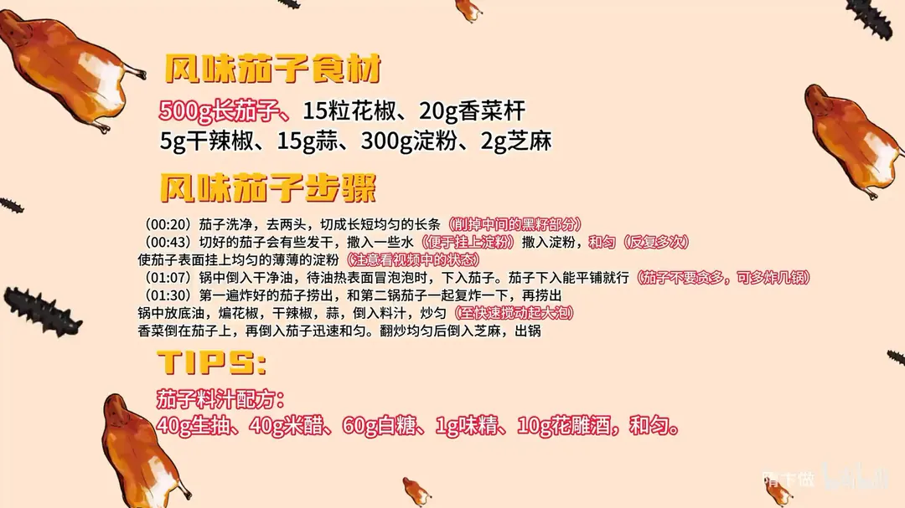

风味茄子
隋卞一做。长茄子 500g 切条，干拍 300g 淀粉，油面起小泡时下锅初炸、再复炸至脆；料汁用 40g 生抽、40g 米醋、60g 白糖，出锅前大火快速裹匀，酸甜微辣。
原视频：https://www.bilibili.com/video/BV1Xy421a7Gn
食材
长茄子、花椒、香菜杆 等 12 样
| 类别 | 用料 | 用量 |
|---|---|---|
| 主料 | 长茄子 | 500g |
| 配料 | 香菜杆 | 20g |
| 香料 | 花椒 | 15 粒 |
| 香料 | 干辣椒 | 5g |
| 香料 | 蒜 | 15g |
| 其他 | 淀粉 | 300g |
| 其他 | 芝麻 | 2g |
| 料汁 | 生抽 | 40g |
| 料汁 | 米醋 | 40g |
| 料汁 | 白糖 | 60g |
| 料汁 | 味精 | 1g |
| 料汁 | 花雕酒 | 10g |
步骤
- 切条：茄子洗净、去两头，切成长短均匀的长条，削掉中间带籽的黑瓤部分。
- 拍粉：切好的茄子会有些发干，撒入一些水便于挂上淀粉；撒入淀粉反复和匀，使茄子表面挂上均匀的薄薄一层。
- 初炸：锅中倒入干净油，待油热、表面冒泡泡时下入茄子；茄子下入能平铺就行，不要贪多，可多炸几锅。
- 复炸：第一遍炸好的茄子捞出，和第二锅茄子一起下锅复炸一下，再捞出。
- 炒汁裹匀：锅中放底油，煸香花椒、干辣椒、蒜，倒入料汁炒匀，全程大火快速晃锅；香菜杆倒在茄子上，再一起倒入锅中迅速翻炒均匀，撒入 2g 芝麻后出锅。
小贴士
- 茄子料汁提前兑好：40g 生抽、40g 米醋、60g 白糖、1g 味精、10g 花雕酒，和匀备用。
- 淀粉共 300g，要分次撒、反复和匀，茄子表面只挂薄薄一层。
讲解要点
难度：★★★☆☆（切条拍粉不难，难在油温和复炸，以及最后裹汁的手速）
为什么这么做
- 中间带籽的瓤片掉：籽和软瓤含水多，炸的时候出水、炸不脆，片掉后条条一致，受热才均匀。
- 先喷水再拍淀粉、不够可以补一次：干茄子挂不住粉，表面潮乎才粘得上；粉是脆壳的来源，一定要拍到表面泛白、不见紫皮。
- 粉只挂薄薄一层：粉厚了会成面疙瘩、也吸油，薄而匀才能在油里迅速结壳。
- 油温看「下锅起小泡」：五六成油温茄子下去能立刻定型，油温低就吸油，太高外面糊了里面还是生的。
- 一锅别贪多、分两锅炸：下多了油温骤降，就变成「煮」茄子，吸饱油还不脆。
- 复炸用中火：把茄子吸进去的油逼出来，壳再脆一层，吃着不腻。
- 油温高了点凉油再下辣椒蒜，汁熬起大泡再下茄子、大火快裹：油太热辣椒蒜立刻糊，汁不熬到起泡就挂不住，裹慢了脆壳又被汁泡软。
容易翻车
- 籽瓤没片净、或者粉拍得太厚，炸出来壳硬、里面还是软的，还吸油。
- 一锅下太多，油温掉下去，茄子软塌塌、咬下去一包油。
- 复炸火太大，脆壳直接焦黑；火太小又逼不出油。
- 汁没熬到起大泡就下茄子，挂不住，盘底一汪汤。
- 裹汁时间一长，脆壳泡软，端上桌就不脆了。
热评补充
- 关键就两步：拍粉要拍满拍匀，炸茄子油温不能低、必须复炸，外壳不成整片脆壳就一定回软；挂汁要等大火汁沸腾冒大泡时下茄子，翻两下裹匀立刻放香菜梗出锅。
原片尾卡

原片文案
AI 字幕校准稿
我代表河南人表示，河南人也喜欢吃这个菜。据说这是每个山东孩子都喜欢的一道菜，还有人说它是茄子最好吃的做法——风味茄子。
茄子把它切成短短的长条，家里做就不用那么规矩了。中间长籽的地方得片一下，要不炸的时候容易出问题。
切完的茄子有点发干，稍微喷点水，要不一会儿淀粉挂不上。茄子表面潮乎乎的就可以拍淀粉了。感觉表面的淀粉还是有点少怎么办？就再来点水。一定要让它表面有一层白白的淀粉，否则它不会形成那种硬壳。
拍好粉就开炸。起锅烧油，炸茄子的油得宽一点，别怕浪费，炸完的油还能用。茄子下锅试一下，上面冒泡泡就说明油温合适了。
一锅炸不完就炸两锅，别贪多。炸到什么程度算合适呢？定型就行，壳摸着还硬。
等这锅炸得差不多了，把刚才炸过的那锅再放进去一块再炸一会儿，这时候关中火。一是让茄子里面含的油往外吐一吐，二是让外面的脆壳更脆一些。炸得跟江米条似的，哗啦哗啦响，就捞出来。听这声音，好酥。
锅里放底油、花椒，关小火，再加点凉油——有时候油温太高就要加凉油，不加辣椒下去就糊了。放干辣椒、蒜，把汁倒进去，快速晃锅，让它起大泡、变得粘稠一些，一会儿好挂在茄子上面。香菜倒在茄子上，再一起下锅，撒芝麻，出锅。
外面裹着很酥很脆的壳，里面的茄子就像一汪水，根本不用费力嚼，用嘴一抿就在嘴里化了。这个味道也很神奇，甜咸酸辣好像都有，回头还有一点点花椒的麻味。
这个菜太家常了，可能会有山东的朋友觉得，这怎么跟我平时吃到的不太一样，以你们自己的版本为准。我们会把最详细的配比放在片尾，大家只要按这个配比做，绝对不会难吃。